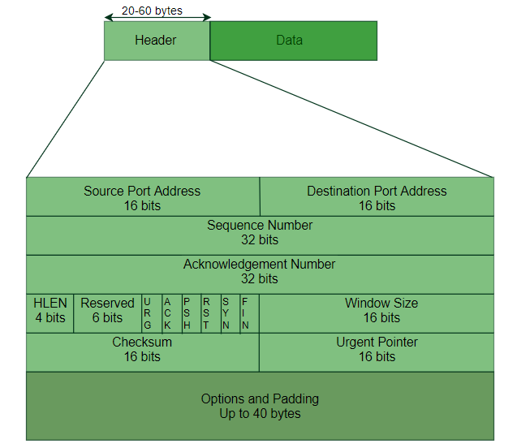

TCP Header
The image below shows the breakdown of a TCP header. The size of the header can be no smaller than 20 bytes and can have up to 40 bytes of options for a total of 60 bytes.
The required 20 bytes consist of the parts listed below:
The first part of the Header is the Source Port Address. This is a 16-bit field that has the port address of the application that is sending the data segment
The Next part is the Destination Port Address. This is also a 16-bit field and holds the port address of the receiver.
After addresses we get to the Sequence number portion. This is a 32-bit field that is used to reassemble the message if the segments are received out of order.
Then we get the Acknowledgment Number. This is the byte number that acknowledges that they previous byte number was received successfully.
Next, we get the Header Length field. This is a 4-bit field that indicates the length of the header by the number of 4-byte words in the header. If the header is 20 bytes the value will be 5 (0101), because 5*4=20, if the header is 60 bytes the value will be 15 (1111), because 15*4=60.
Then there are the Control Flags. These are 6 1-bit fields that control connection establishment, termination and abortion, flow control and other important connection information they are
URG: Urgent point valid
ACK: Acknowledgement and number
PSH: Push Request
RST: Connection Reset
SYN: Synchronize sequence numbers
FIN: Just like the end of a bad movie (Terminate the connection)
The next part of the header is the Window Size, it is what it sounds like. Establishes the size of the window in bytes.
Then we have the Checksum. This field is for error control, it holds the checksum.
Then we have the Urgent Pointer. This field is only valid when the URG flag is set. This field is used to point the urgent data to reach the receiver earliest.
This sums up the required bits of a TCP Header.

TCP – Transmission Control Protocol
TCP offers a reliable connection-oriented service. Together these two protocols carry most of the communications across the Internet.
TCP is a layer 4 protocol. Layer 4 protocols are responsible for the openings of connections, acknowledging the receipt of data, defines the service at the destination that should be used to handle the segments and notifying the receiver what service sent the segment.
TCP is the best choice when you want to ensure that the data is sent accurately and completely. This protocol ensures that every bit of data that is sent arrives error free, preventing documents and files from becoming corrupted. This process involves using a sliding window flow control over the logical connection. The flow control and error messages are sent through this mechanism. All these steps in the process are what ensure that exact duplication of the file occurs.
So, what uses TCP? High-level protocols that need to transmit data use TCP. These protocols include FTP (File Transfer Protocol), SSH (Secure Shell), HTTP (Hypertext Transfer Protocol, general web access) and Email messages through IMAP (Internet Message Access Protocol, POP (Post Office Protocol) and SMTP (Simple Mail Transfer Protocol)